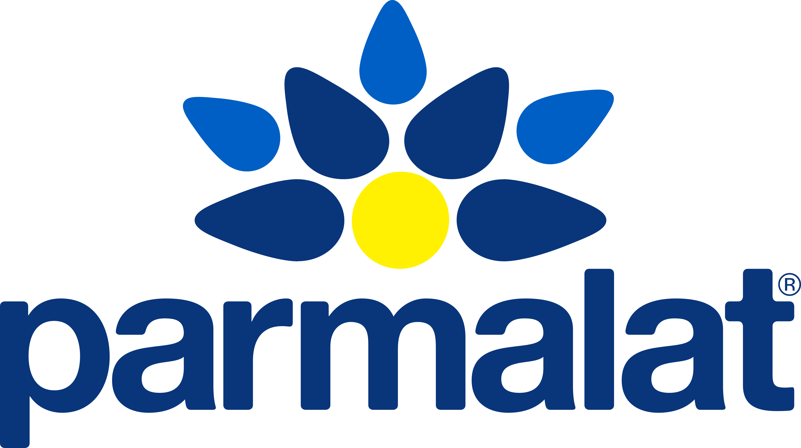

Sobre nós
A Padaria Pão Doce é um lugar especial onde o aroma de pão fresco e café recém-passado enche o ar todas as manhãs. Localizada no coração da cidade, nossa padaria tem sido um ponto de encontro popular para moradores e visitantes há mais de uma década. Ao entrar em nossa padaria, você será recebido com um sorriso caloroso e um ambiente acolhedor. Nossos funcionários estão sempre prontos para atendê-lo com cortesia e ajudá-lo a escolher entre uma ampla variedade de produtos frescos e saborosos. Dos pães artesanais aos doces tentadores, temos algo para todos os gostos.
-

- 